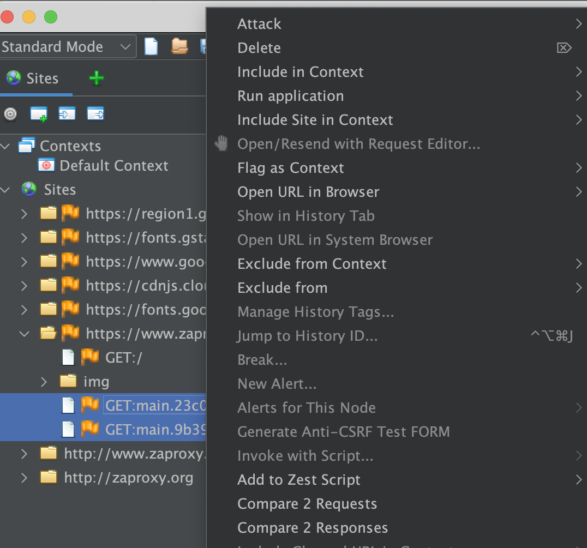
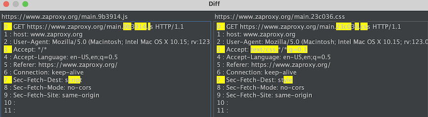

The Diff add-on allows you to compare 2 messages (requests or responses).
It can be accessed by selecting two messages from any view component that shows more than one message e.g. the Sites tree and then opening the context menu (usually done by pressing the right-click button). You'll see the options "Compare 2 Requests", "Compare 2 Responses" there clicking one of it will open the diff window.
Here's the screenshot of how the context menu will look like when you select two messages
Note: These two options are greyed out (disabled) when you select only one message and open the context menu.
The diff window shows the difference between two messages highlighted yellow.
